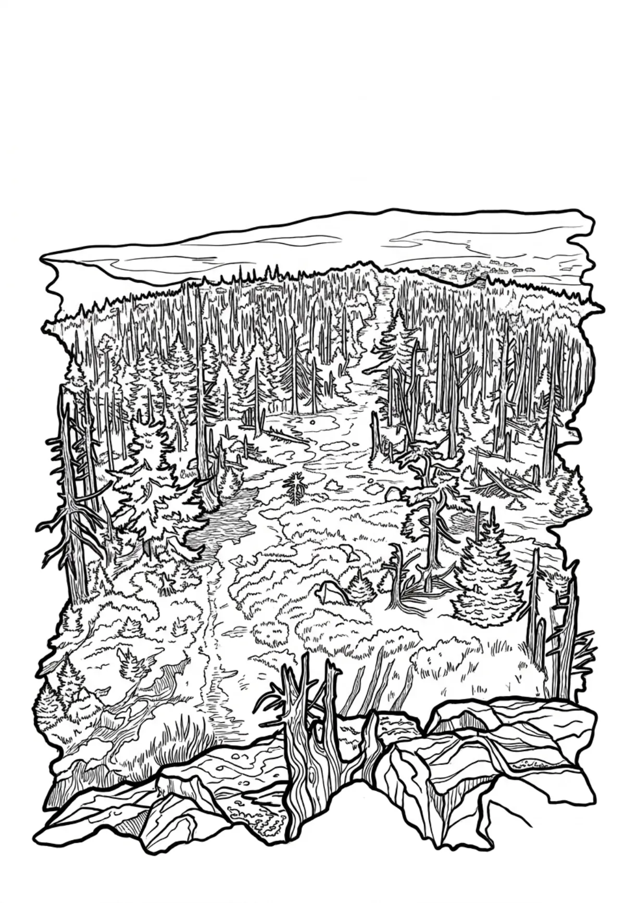

Holubník
Holubník (německy Taubenhaus) je hora ležící v Libereckém kraji ve středu Hejnického hřebene v pohoří Jizerské hory. Holubník je zpřístupněn červeně značenou turistickou stezkou spojující Ptačí kupy (1013 m) a sedlo Holubníku (999 m). Po severním úbočí vrcholu je vedena Štolpišská silnice, po jižním úbočí zase Nová cesta.
Více na Wikipedii